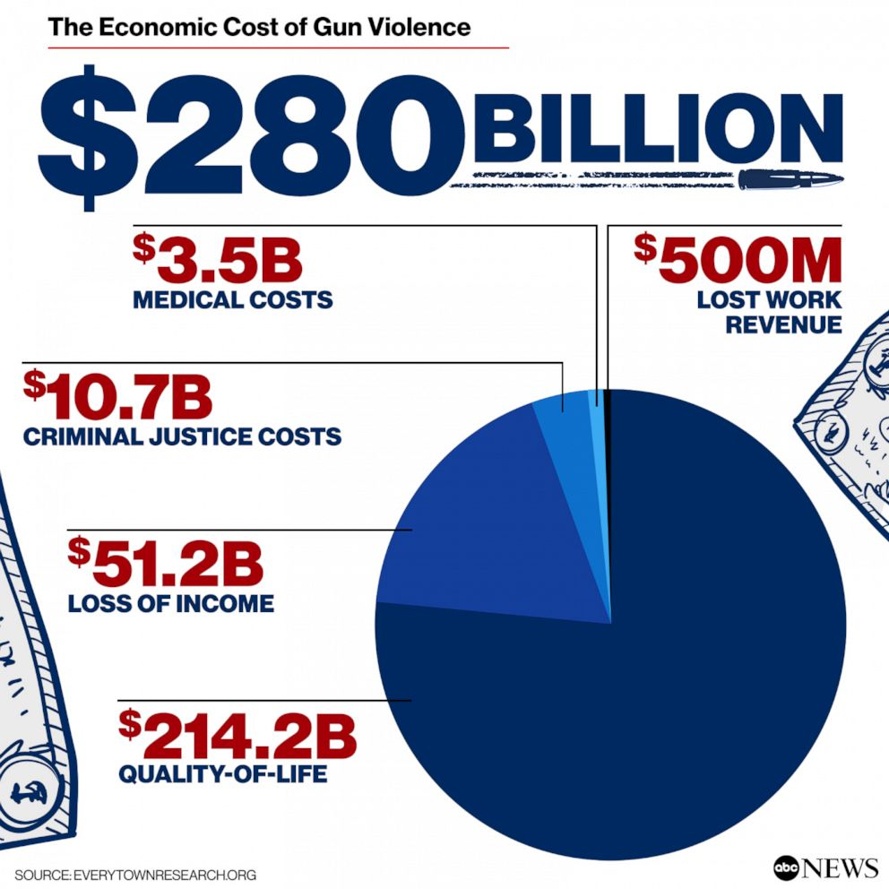

Gun violence in US and what the statistics tell us
Gun violence is a fixture in American life - but the issue is a highly political one, pitting gun control advocates against sectors of the population fiercely protective of their right to bear arms.
Any violent act involving a firearm, such as killings, suicides, and unintentional shootings, is considered to be a case of gun violence. It results in fatalities, causes physical and psychological suffering to people and communities, and endangers people's safety.
Every year, tens of thousands of people are killed by firearms in the United States alone, including homicides, suicides, and accidental shootings
Survivors of gun violence may suffer from lifelong disabilities, chronic pain, and mental health conditions such as post-traumatic stress disorder (PTSD).
Medical treatment for gunshot wounds can be expensive, and victims may require ongoing care and rehabilitation.
Gun violence is a fixture in American life - but the issue is a highly political one, pitting gun control advocates against sectors of the population fiercely protective of their right to bear arms.
What some firearm owners think could solve the gun violence in America.
As gun violence has surged nationwide, dispensing massive sums of money to grassroots anti-violence organizations has become fashionable across all levels of government.